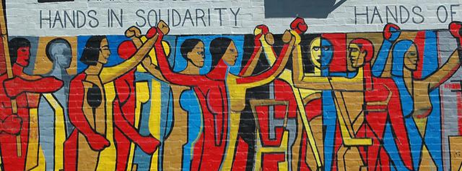

Towards alterantive-novel economic networks
The current prevailing narratives, institutions, and structures related to our present economic and governance systems are not only being incapable of responding to the great challenges that we face as a species, but are also developing irreversible destructive tendencies.
If we continue in this pathway, not only the general situation of normal people will surely continue to get worse in many aspects, also we possibly are going to reach situations of no-return in many relevant issues, like with the ecosystemic deterioration or a possible nuclear war scenario. Today we cannot continue to base our societies on old ideas, deficient institutions, or obsolete socioeconomic systems; that not only haven't been able to satisfactorily respond to the great problems of past historical times, but they are also not going to be able to solve the many issues that we currently face as a civilization. At the same time, the enormous possibilities of dreaming and creating new opportunities for social and personal growth of billions of people are being dynamited in the process.
In turn, the alternative ideas that emerged in the past that were born to provide differential pathways towards other better social configurations have not been satisfactory either, and in many cases have even been more negative than the institutions they wanted to replace. In order to re-think efficient and possible alternatives, today it is necessary for us to look for new frames of reference and innovative approaches that are adapted to this present historical era, which perhaps has little to do with what the past was.
Beyond traditional alternative-social economyOvercoming proposals related to alternative systems and institutions oriented to outcompete the current old-running structures and dynamics have been many, from different theoretical frameworks, geographical locations, and cultural values; that in some way or another responded to the particular historical periods in which they were conceived, ones which had certain prevailing-dominant ideas and specific structural circumstances different from those of today respectively.
Despite many efforts and good intentions, these old alternatives could not materialize or function efficiently; possibly due to reasons such as lack of necessary knowledge and insufficient development of social sciences, technological deficiencies, wrong notions about history and social change, appeal to inadequate action strategies, or just plain bad luck, among many other possible factors. These traditional alternative economy attempts have been various and of a different nature; such as cooperative federations, locally-based sustainable development projects, the creation of state-actioned plans and companies, the development of corporate social responsibility, mutual systems, and a lot of more proposals of different varieties that in one way or another were anchored in diverse frameworks of ideas and circumstances that emerged in the past. Beyond the good will and contributions of these old-traditional initiatives, they are clearly not sufficient in terms of facing the great challenges and opportunities that we face today.
Thus, today we must re-think possible new alternatives through new theoretical frameworks and institutional-systemic designs; that incorporate the good things of traditional initiatives, but go beyond them. In that sense, we need to go towards new ideas in accordance with the notions and possibilities of our contextual historical present time, where knowledge about social is more advanced, new technologies are available, and the prevailing power relations and social structures are quite different from the ones of the recent past.
Towards alternative-novel economic networksGiven the complexity of our current challenges, it is impossible to know what new alternative economic and institutional systems will concretely emerge as a possible effective overcoming of the destructive current prevailing structures; so forecasting such thing is at least a lack of intellectual humility, and even appeal to science fiction. In this way, we do not seek here to predict what alternatives will emerge and grow, nor to propose the design of a possible superior macro-system. Rather, we will seek to raise and propose some possible bases and consequent principles which could serve as guidelines and orientations around co-creating these new economic-governance systems and innovative institutional arrangements:
Network approach. As a frame of reference, the network approach can be essential to see and build new social realities; framing the possibility for the emergence of different distributed systems of alternative economy, where diverse interlinked structures, processes, and agents may configure in multiple articulated ways. That, in that sense, may give rise to an emergent network structured around different institutions, organizations, protocols, platforms, cultures, agents, and multiple other compatible alternative social dynamics.
Multiplicity and pluralism. The creation of alternative systems, institutions, and projects should be plural; in order to address different possibilities and complexities. In that sense, it will be good to appeal to the connection, articulation, and coexistence of different parallel initiatives and systems; that in practice they share information, resources, and many other relevant things in order to help each other respectively.
Co-determination and open-participation. There is a need to go beyond the old systems of ownership and control of the means of production and governance in general; overcoming those related to vertical notions like highly concentrated private property or commanded-oriented wide organizations, as well as traditional old-dated more horizontal pro-public and collectivists conceptions. A new economy can be oriented towards the principles of open-participation, joint-control, combined forms of centralization-decentralization, and the application of multi-layer and multi-level decision-making systems; with the intention to giving rise to a widely participatory system, which tends to economic equity, multi-experimentation, and the inclusion of diversity.
Regenerative perspective. It is more than evident that we must include the ecosystem in our institutional and economic rationale; in order to protect it, restore it, and regenerate it from the current very negative circumstances. Homo sapiens should not be thought of as something external to the ecosystem, but rather an integral and constituent part of it; and as such, the self-reproduction of civilization and general well-being should be in parallel and compatible with the one of other species, habitats, and environmental dynamics that are crucial to sustainability. Thus, we must include in our economic-institutional systems frameworks such as the circular economy, environmentally compatible design, green technologies, good treatment of non-human animals, among many other issues related to creating a more resilient and sustainable anti-fragile socio-ecosystem.
Glocalization. The prevailing model of the current globalization is simply unsustainable socially and environmentally speaking, and at the same time we cannot return to locally-based models like the hunter-gatherers ones that we generally have lived for most history on this planet. Thus, perhaps one of the answers to the dilemmas of our current territorial organization may lie in the concept of glocalism, which seeks to add and integrate the concepts of globalism and localism; giving rise to combined organizational designs and processes in different levels. In that sense, it seeks to achieve the inclusion of larger scales -such as the planetary or supranational-, with smaller scales -such as the regional or local- respectively. Glocally orientated economy and governance, for example, could be based on the principle of proximity and sovereignty -among others-, related to the degree of involvement of people in the many specific contextual-territorial circumstances.
Positive high-tech application. To build efficient alternative economic-governance possibilities that manage to generate abundance sustainably, we must appeal to productive technological development and smart decision-making governance models. Thus, unlike today, we must begin to refocus the development and use of technology under a positive, equitable and inclusive logic; which manages to include the technological achievements achieved so far, but also overcome the destructive related to it dynamics current incentives have generated.
Possibly these principles will be useful around the creation of new proposals that contribute to general well-being, equity, ecosystem regeneration, and above all the empowerment of ordinary people.
Rethink change strategiesBeyond the need to rethink and restructure our institutional systems related to the economy and governance in general, energy should also be put into developing new strategies for social transformation that go beyond those deployed in the past.
In that sense, somewhat following the current historical sense; and going beyond modern and postmodern notions of social change, today we need to think about social transformations beyond the modernist waiting and expectation of great revolutions, or also beyond the long postmodern historical immobility sentiment and pessimism. So, rather than placing our expectations on alleged specific macro-historical dynamics, it would be good to orient ourselves towards a constructive and possibilistic approach; which breaks with historical determinism and indeterminism, by the appealing to activism, and also oscillates between optimism and strategic pessimism.
For this, given the understanding that we know little about macro-historical dynamics of social change, and neither about which are the most appropriate strategies around facing the great problems that civilization faces; it would be good to appeal to multiple visions, strategies, and attempts at social transformation. In that sense, we could rely on a combination between different gradualist and revolutionary approaches, through also different in-game strategies such as participation in elections and the creation of social enterprises; out-game strategies such as the creation of innovative out-projects -such as new cities or ways of living- in separate territories; or eventually even also anti-game strategies such as ban-oriented actions if necessary.
Towards an emergent network-effectGiven the complexity of today's world, and the number of existing systems and subsystems it contains; if new generation networks of alternative economies and institutions can be structured to significant dimensions, it is likely to emerge as a distributed network, through a structural emergence effect. This aggregated effect may contain new logics and dynamics of social functioning that we cannot yet see; but that we hope and seek that at some point they become an effective and efficient alternative to the destructive structures that currently prevail.

By now, it is very difficult for us to be able to predict how this emerging effect will happen, or which structures and processes it will encompass; so it would not be good to put energy into trying to force a single macro-systemic design for humanity, and even less so for the new generations to come. On the other hand, expecting a distributed emergent effect in the future does not imply immobility; if not quite the contrary, which is why launching new ideas, projects and parallel socio-political movements today in a more or less coordinated manner it is very important.
Thus, it will be in some way our responsibility -of those of us who inhabit this planet today- to reflect on our current situation; as well as to design, implement and expect new diverse network possibilities that amalgamate different innovation processes of ideas, structures, technologies, and cultural logics.